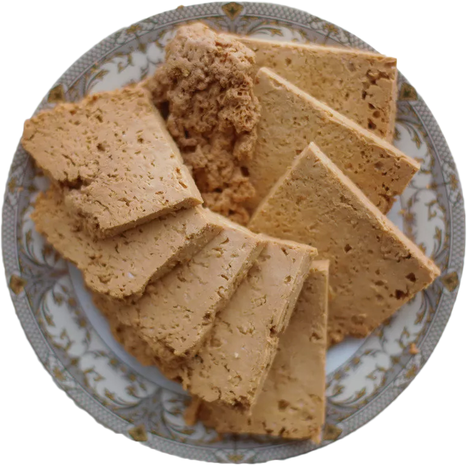
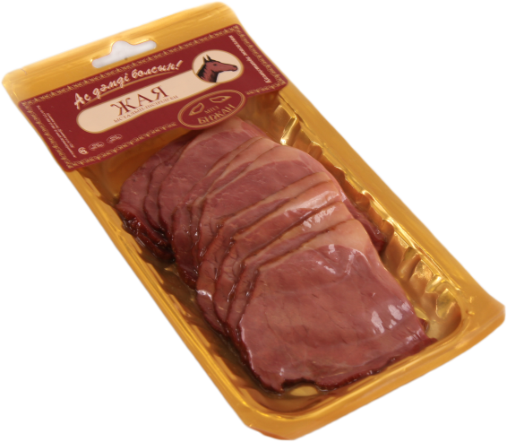

Кумыс
Напиток отлично справляется с авитаминозами.
Он хорошо восстанавливает силы после продолжительной болезни.
Повышает иммунитет, давая возможность организму быстрее избавиться от простуды
или бактериальной инфекции. Напиток из кобыльего молока содержит небольшое количество калорий, а
потому его можно употреблять без опасений за фигуру.
590 ₽/л
Шубат
Напиток рекомендуется включать в рацион людей страдающих
от хронического гепатита, гастрита, кожных заболеваний,
сахарного диабета. При поступлении в организм он усиливает
выделительную функцию желудка, что способствует улучшению усвоения белков, жиров,
углеводов. Кроме того, при регулярном употреблении 200 мл напитка в день снижается действие
токсинов, повышается сопротивляемость организма.
90 ₽/л
Коровье молоко
Коровье молоко, богато питательными веществами , такими как белки, углеводы, жиры, витамины
группы
А, Е, К, С, D, В, РР и минералами. Белок коровьего молока является наиболее ценным, потому что
он
является источником всех аминокислот, необходимых для организма; казеина, глобулина и альбумина,
которые особенно важны для детей и спортсменов.
400 ₽/кг
Козье молоко
Это молоко полезно для всех. У него невысокая калорийность, поэтому его часто включают в
диетическое
меню, оно выводит токсины из организма и снижает уровень холестерина в крови.
Козье молоко богато натуральным протеином, разгоняет метаболизм и повышает выносливость у
мужчин,
активно занимающихся спортом.
Во время беременности этот продукт борется с дефицитом кальция и витамина В12 у молодых мам.

100 ₽/кг
Iрiмшiк
Сладкий сыр из коровьего молока
120 ₽/кг
Курт
Это соленый сушеный творог на основе овечьего молока.
Готовое блюдо обладает ярко выраженным соленым вкусом с приятными сливочными нотками.
В зависимости от компонентного состава он может быть кислым, сладким, острым или пряным.

500 ₽/кг
Жая
Невероятно вкусное блюдо.
Готовится из филейной вырезки конины.
Куски мяса солят сухим посолом, укладывают в кастрюлю для просаливания.
Просолившееся мясо просушивают, вялят, коптят и варят по типу жала.
Варить жая можно вместе с казы в одной воде и тоже 2 часа. Перед подачей на стол жая тонко
нарезают
и украшают зеленью.
800 ₽/кг
Казы
Популярность этой колбасы объясняется ее полезными свойствами.
Казы несет те же полезные свойства, что и сама конина.
Конская колбаса и ее польза обусловлена бОльшим количеством белка,
чем во всех остальных видах мяса. Кроме того, повышенное содержание
органических кислот и баланс витаминов и минералов способны принести
пользу деятельности ЖКТ и нормализовать его функцию.
450 ₽/кг
Мойын
Кусок мяса, представляющий собой шею.
По традициям преподносится жене, показывая ее возможность управлять мужчиной.
400 ₽/кг
Шужык
Колбаса из конины.
Выгодное предложение!
Только сегодня!
700 ₽
Все виды сыров
В предложение входит 1 кг iрiмшiк и 1 кг курта
900 ₽
Все виды мясной продукции
В предложение входит 1 кг жая и 1 кг казы
900 ₽
Все виды молока
В предложение входит 1 л шубата, 1 л кумса, 10 л коровьего молока, 2 л козьего молока
Наша ферма:
Отзывы покупателей
Благодаря вашим отзывам мы становимся лучше!
Алена, 30 лет
Прекрасный магазин с хорошим обслуживанием. Уголок прекрасной страны с хорошими
традициями и обычаями.
Дмитрий, 20 лет
Уже более года являюсь клиентом данного магазина. Обслуживание уже как в семье.
Всегда свежая продукции без ГМО и консервантов.
Нурлан, 24 года
Прекрасный магазин со свежей продукцией. Уехал из дома давно, но питаюсь как
дома.